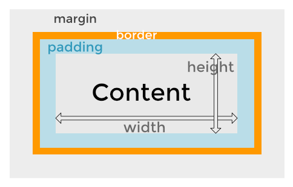

The difference between Margins, Borders and Padding?

A basic understanding
So I think the best place to start is by saying, everything in html has an imaginary square/box around it. Whether it's a "p" tag of text, an image or just anything else
you want space around, or to place a margin on. It's super easy and hopefully my awful way of wording things make sense.
Padding
So using the image above (if it's there, fingers crossed) you can see that the padding sits right outside whatever content you're adding. Now what "padding" is,
is really just expanding that imaginary box I told you about before, to the border.
So for this text here, I'm going to add padding around it as an example. If I wanted 5px of space around this h4 tag, on both above, below and to both sides, I would
have a class or id with the value "padding: 5px;" and link it to this tag. By adding just 5px, you're adding 5 pixels of space around all sides, if you wanted to add a different amount of pixels
on each side, you would write something like "padding: 4px 8px 4px 8px;". This adds 4px of space to the top and bottom of our tag, and 8 to the left and right, the easiest
way to remember this (for me atleast) is to think of it as just an ordinary clockwise motion, but I'm just going to leave it at 5px each side and now we can move to borders.
Borders
So the term "Border" should be self explanatory, it's doing exactly what it says, adding a border to our padding. What it's really doing is making that imaginary box,
actually appear. And this is super useful because it's really showing you where exactly your content is positioned on your project, making it so much better to work around.
Once again, I'm going to add the padding to this box of text, but also add the border as an example. This is very similar to the padding, it's formatted almost identically,
but I'm going to run over the basics of borders and add a very thin box around here, so for this I would have the value "border: 1px solid black;". This creates the 1px solid line
around each side of our content, same as the padding. And if you were wanting to add a thicker border on just one side, you would do almost the same as before, but you would
need to specify you're changing the width of the border by "border-width: 4px 6px 4px 6px;". There's so much more you can do with borders, even changing the colours of each side
by using "border-color: black blue black blue;" and other border styles, but we can move other to margins now.
Margins
So margins are pretty much the same as paddings, except we aren't adding space between our content and border this time, we're adding space around our border, or the
whole element really.
Just another example for this text here although it won't really look like much has changed, so we're gonig to change the border too. The CSS for margins being extremely similar
to padding makes this simple to remember, just by using "margin: 5px;" or "margin: 4px 6px 4px 6px;". Another way to changing margin width (which you can also do for padding), is
"margin-top: 5px;", this is also availble to margin-left, margin-right or margin-bottom.
That's the absolute basic and essentials for understanding padding, borders and margins, and hopefully it all makes sense! I've gone over what each individual element does,
and how it makes whatever project you're working on, easier to work on or just look nicer, thanks for reading! :)